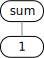
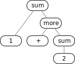
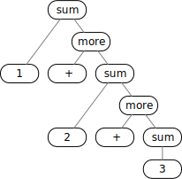

What's in a Rule?
A Language for Rules
Formally, a rule is an ordered pair of two sequences of terminals and non-terminals, i.e., from the two sets of symbols in a grammar. For rules of a context-free grammars the first sequence of the ordered pair is restricted to be a single non-terminal.
A grammar contains rules and describes sentences, i.e., sequences of input terminals. As an example we consider sentences which are sums of numbers such as
1 + 2
A rule to describe this sentence is, e.g.,
sum: '1' '+' '2';
So far, this notation for rules is inspired by the Backus-Naur form:
-
sumis the non-terminal at left; we require that non-terminals are alphanumeric names, i.e., consist of letters, digits, and perhaps underscores, and start with a letter. -
The sequence of terminals on the right consists of
1,+, and2; we enclose each in single quotes to indicate that they have to be spelled literally as shown. If we need a quote or backslash as part of a terminal we will precede it by a backslash. -
Finally, we require that the two parts of the rule are separated by a colon and that the entire rule is terminated by a semicolon.
-
White space is necessary in a rule to separate non-terminal names, but it is ignored outside of terminals.
It should be noted that a list of such rules implicitly defines everything there is to know about a grammar:
terminals and their representations in the input, non-terminals, rules, and the start symbol,
by convention the non-terminal at left in the first rule — here it is sum.
Example 2/01 illustrates that this grammar can be used to recognize a sentence:
-
Press to represent and check the grammar, and then
-
press to perform syntax analysis, i.e., to try to recognize the sentence, i.e., to check whether a parse tree can be found.
-
Now add or remove some spaces in the and press again to see that white space does not matter for recognition.
-
Replace
1and2in the and press again to see that other numbers cause errors as long as the rule in the requires1and2. -
Finally, replace
1and2in the and in the and press and to allow different numbers.
Literals and Tokens
The example shows that spelling terminals literally in grammar rules may be useful but it is too restrictive. If we want to describe sums of numbers in general the specific value of a number is not important.
Therefore, we use two kinds of terminals:
-
Literals represent themselves and are single-quoted strings using
\only to escape single quotes and\itself. -
Tokens represent classes of similar inputs such as numbers, and are specified in rules as alphanumeric names which must be different from non-terminal names. For convenience we will use upper- and lower-case initials to immediately distinguish the two kinds of names.
Tokens have to be defined separately from the grammar itself. Chapter three explains in detail that regular expressions are a very good way to describe tokens. For now it is sufficient that
/[0-9]+/
describes a Number of any length
which consists of one or more of the digits from 0 to 9.
Based on this definition the rule
sum: Number '+' Number;
describes all sums of two integer numbers such as
12 + 345
Example 2/02 contains the new rule in the
and the definition of Number as a property with the token name
and a (non-anchored) regular expression as the value in the :
-
Press to represent and check the grammar.
-
As it is set up, the example will produce an error when you press to create a parser and perform syntax analysis — the area contains a bit more than a sentence.
-
Change either the or the to avoid the error.
Alternatives
A more useful sum of numbers has to contain at least one number, but it should be allowed to contain any number of numbers.
If the right hand side of a rule only contains terminals we would need very many rules. Here are the first three, all with the same non-terminal on the left:
sum: Number;
sum: Number '+' Number;
sum: Number '+' Number '+' Number;
There have been many extensions to the BNF notation which inspired the grammar notation used in most of this book and developed in this chapter. For alternatives, we collect all pairs with the same non-terminal at left and write instead:
sum: Number | Number '+' Number | Number '+' Number '+' Number;
We require that a rule name, i.e., the non-terminal at left, is unique,
and we use | to concatenate separate alternative sequences for the right-hand side.
Example 2/03 illustrates that the grammar above has a problem:
-
Press to represent and check the grammar and see the error message.
-
You can toggle to suppress ambiguity checking and thus the error message when you press , but
-
when you press to try and recognize the content of the you will find that only one number, i.e., the first alternative of the rule, can be recognized.
-
Check out that once is set the order of the alternatives in the rule determines how many numbers can be in a sum.
In the formal definition of a grammar there are no restrictions on rules. However, it would be quite inefficient to have to try all alternatives to find one that actually confirms that an input is a sentence.
Therefore, we require that we must be able to select the appropriate alternative just by looking at the very next input — this is known as one symbol lookahead and it means that we will never back up in the input.
Example 2/04 shows a change to the grammar to circumvent the problem:
-
Press to represent and check the grammar, and
-
press to recognize the prefix and the sum with three numbers in the .
-
Change the prefix and work with other sums in the .
The example uses the following grammar:
sum: 'a' Number
| 'b' Number '+' Number
| 'c' Number '+' Number '+' Number;
A prefix from a to c determines how many numbers the sum should contain.
While this works it is not exactly user-friendly...
Chapter ten will show a less intuitive way to get from grammars to recognition which makes the grammar in example 2/03 perform as intended — still without backing up:
-
The very first button should show . If not, click it until it does.
-
Press to process the grammar — this time there is no error message.
-
Enter sums with one, two, or three numbers in the and press to see that all are recognized without errors.
-
You can toggle to produce a trace (to be explained in chapter ten) which indicates when input is stacked (
shift) and when a rule is satisfied (reduce, always followed bygoto).
Recursion
Real sums contain any number of numbers, and they shouldn't require an obscure prefix.
Consider the following approach:
a: Number | Number '+' a;
This may look confusing but it is a finite description of an infinite number of sums with a number and as many additional plus signs with numbers as we choose:
-
The first alternative states that
ais aNumber. -
Alternatively,
ais aNumber, a plus sign, and anothera— which can be a singleNumber, or more...
Recursion is a finite way to describe infinite things. However, the particular rule above violates the principle that one symbol lookahead should be sufficient to select the successful alternative, i.e., two alternatives should not start with the same terminal — this was already illustrated in example 2/03.
The following rule seems to look better:
b: Number | b '+' Number;
This is another finite description of an infinite number of sums with as many numbers as we choose:
-
The first alternative states that
bis aNumber. -
The second alternative allows us to append as many plus signs with numbers as we want.
However, example 2/05 which contains both rules, a and b,
shows that there might still be problems:
-
Press to represent and check the grammar and see an error message:
bis left-recursive. -
Remove the rule for
bfrom the grammar and removebas an alternative insum. Then press again to see another error message:ahas ambiguous alternatives.
A rule, considered just as an ordered pair, is left-recursive if the non-terminal at left appears first in the sequence at right, either directly, or even when tracing through other ordered pairs.
Example 2/06 contains a small change to b
to illustrate that left recursion can involve several rules:
- Press to try to represent the grammar
and see the error messages: this time
sumis left-recursive.
sum: b;
b: Number | sum '+' Number;
Intuitively, this grammar does look doubtful — even without ambiguities.
"One symbol lookahead" would select the first alternative of b and that is only a single number.
If the alternatives for b are interchanged and the rules are tried in order
it looks like a sum is a b is a
sum is a b ... will we ever start to look at the first number in the input?
It all depends on the approach used to interpret the grammar. The technique explained in chapter ten can deal with left recursion. Try example 2/06 again:
-
The very first button should show . If not, click it until it does.
-
Press to process the grammar — this time there is no error message.
-
Enter various sums in the and press to see that all are recognized.
Optional Brackets
We want to describe sums and avoid ambiguities and left recursion. Consider:
sum: Number more;
more: '+' sum |;
A sum consists of a number and more,
and more adds a plus sign and another number or eventually nothing
because more has an empty alternative which stops the right recursion on sum.
At the end of chapter one it was noted that empty alternatives are awkward and they can easily be overlooked in a rule. Therefore, we extend our grammar notation:
sum: Number [ more ];
more: '+' sum;
We use brackets to indicate that part of an alternative is optional and we forbid empty alternatives — including those which only consist of optional parts...
Work with this grammar in example 2/07 to see that we can finally have any number of numbers in a sum:
-
Press to process the grammar,
-
enter various sums in the , and
-
press to see that all are recognized.
The grammar uses right recursion to get long sums with syntax trees such as the following:
|  |  |  |
If these trees were interpreted to perform arithmetic they would compute the sums from right to left, i.e., right recursion in the grammar results in right-associative trees. This is suggested by the brackets in the output from example 2/07:
[ '12' [ [ '+' [ '345' [ [ '+' [ '6789' null ] ] ] ] ] ] ]
Deeper nesting occurs at right.
Rules can contain alternatives.
We can use this to allow addition and subtraction in the rule for more:
sum: Number [ more ];
more: '+' sum | '-' sum;
Brackets can contain alternatives, too. Here is another way to describe the same language, i.e., the same set of sentences, i.e., sums with any number of additions and subtractions:
sum: Number [ add | subtract ];
add: '+' sum;
subtract: '-' sum;
In chapter six this last version will turn out to be the most useful.
For now, you can experiment with the first variant in example 2/08 and the second variant in example 2/09. Either one accepts arbitrary sums and differences and even produces the same set of brackets, numbers, and operators:
[ '12' [ [ '-' [ '345' [ [ '+' [ '6789' null ] ] ] ] ] ] ]
Chapter five will explain what all the brackets in the output mean. For now we note that the different grammars produce the same output, but something else is more significant. Consider
12 ( - 345 ( + 6789 ) )
which is the same output with some clutter removed.
Mathematical conventions dictate that the innermost parentheses have to be elaborated first, i.e., this is likely to be interpreted as
add 6789 to 345
then subtract the result from 12
i.e.,
12 - (345 + 6789)
and that's probably not what the program
12 - 345 + 6789
intended...
Therefore, it is important to note that
-
there can be different grammars describing the same sentences and language, and
-
if a grammar is intended to suggest meaning, such as mathematical operator precedence and associativity, rules have to be crafted with that in mind —
-
right recursion produces right associativity and for now left recursion is not allowed for the interpretation of rules from left to right even if it would produce the commonly used left associativity.
Some Braces
We started with the grammar notation known as Backus-Naur Form which was created to describe the programming language Algol. Recursion was used to express any kind of iteration so that a finite grammar can describe sentences of arbitrary length.
Niklaus Wirth noticed that many programmers are more comfortable with explicit constructs for iteration and proposed the first of many extensions to BNF which all offer such constructs.
Assuming that a sum has at least two numbers, here is another way to define a grammar:
sum: Number { '+' Number | '-' Number };
Unlike other extensions to BNF, this book uses braces to enclose alternatives which must occur one or more times, i.e., a sum conforming to this grammar contains at least two numbers.
Check out example 2/10 and compare the output
[ '12' [ [ '-' '345' ] [ '+' '6789' ] ] ]
to the output of example 2/08 and example 2/09 shown before:
[ '12' [ [ '-' [ '345' [ [ '+' [ '6789' null ] ] ] ] ] ] ]
Iteration makes for simpler looking output — this will be discussed further in chapter five and six.
Many Iterations
What about a sum that consists of a single number or more?
As part of a rule, both, brackets and braces, can contain one or more alternatives. Alternatives are on the right-hand side of rules, where braces and brackets made their appearance. Combining the ideas, this means that braces and brackets can be nested.
Clearly, it is superfluous to have brackets only contain another set of brackets or braces only contain another set of braces. More importantly, we avoid empty alternatives, i.e., an alternative cannot just consist of something optional in brackets, i.e., braces cannot just contain sets of brackets.
But — something in braces appears one or more times; therefore, when brackets directly contain braces, together, they indicate something that can appear zero or more times:
sum: Number [{ '+' Number | '-' Number }];
Check out example 2/11 and, in particular,
confirm that single numbers are recognized
and compare the output for 1 + 2
[ '1' [ [ [ '+' '2' ] ] ] ]
to the output for the same sum in example 2/10:
[ '1' [ [ '+' '2' ] ] ]
We will return to this in chapter five.
Quick Summary
-
Terminals are literals and tokens.
-
Literals represent themselves as input and are single-quoted strings using
\only to escape single quotes and\itself. -
Tokens represent sets of inputs, e.g., numbers, and are alphanumeric names starting with a letter — in our examples in upper case.
-
Tokens are defined with search patterns, e.g.,
/[0-9]+/for numbers. -
Formally, rules are ordered pairs, each consisting of a non-terminal and a sequence of terminals and non-terminals.
-
Non-terminals are alphanumeric names starting with a letter — in our examples in lower case. The sets of non-terminal names and token names must be disjoint.
-
Backus-Naur Form uses
:to separate the non-terminal from the sequence in the rule,|to combine all alternative sequences for the same non-terminal, and;to terminate a rule. -
There has to be exactly one rule for each non-terminal and we call the non-terminal name the rule name.
-
The rule name of the first rule in the list of rules of a grammar is the name of the start symbol.
-
Extended BNF adds notations for optional and repeated sets of alternatives. We use
[and](brackets) to enclose a set of optional alternatives and{and}(braces) to enclose a set of alternatives that must appear some times, i.e., one(!) or more times. -
We forbid empty alternatives, e.g., an empty sequence or a sequence containing only optional items. In particular, braces cannot directly contain only brackets.
-
We allow brackets to directly contain braces because this denotes a set of alternatives which can appear many times, i.e., zero or more times.
-
By convention, white space in a grammar and usually in input will be ignored.
Recursion Revisited
Example 2/12 contains a fairly comprehensive grammar describing a comma-separated list of expressions, with the typical arithmetic operators and parentheses:
list: sum [{ ',' sum }];
sum: product [{ '+' product | '-' product }];
product: signed [{ '*' signed | '/' signed }];
signed: [ '-' | '+' ] term;
term: Number | '(' sum ')';
This grammar shows the necessary use of recursion for balanced notations such as parentheses. This is neither left- nor right-recursion.
The rule for term contains both parentheses
to keep them balanced
and by recursion nests a sum and thus balanced parentheses
to any depth.
The rule for sum uses iteration to arrange for any number of product
and thus term in sequence,
and they can contain balanced parentheses,
but the grammar does not permit unbalanced parentheses in a sentence.
Example 2/13 contains a grammar describing typical list constructs:
terminated: { [ separated ] ';' };
separated: element [{ ',' element }];
element: Number | enclosed;
enclosed: '(' [ separated ] ')';
-
A sentence is a list with one or more entries, each
terminatedwith a semicolon. -
An entry itself can be empty (because
seperatedis optional), or it is a list of one or more elements which areseparatedby single commas. -
An
elementis either aNumber, or a listenclosedby a balanced number of parentheses. -
The
enclosedlist consists of zero or more elements which areseparatedby single commas. -
terminatedorseparatedare blueprints for statements in a programming language.enclosedis a blueprint for function parameters or arguments.
It is instructive to investigate various sentences, e.g.,
( (1,2), 3, (()) ); ;
even if the output looks much messier than the sentence itself.
Tokens Revisited
As a final example in this chapter, example 2/14 contains
the grammar from example 2/12,
with one more rule added to
define Number right in the grammar
from single digit literals:
list: ...
Number: { '0' | '1' | '2' | '3' | '4'
| '5' | '6' | '7' | '8' | '9' };
This suggests that we might not need tokens, i.e., names for classes of input such as numbers or names.
However, example 2/14 demonstrates that the result is not quite the same. As we shall see in the next chapter, our recognition process usually ignores white space in the input. With the rule above, both of the following numbers
12,
1 2
are acceptable for a sentence and the result, even for a single number, can be unexpected:
[ [ [ [ null [ [ [ [ '1' ] [ '2' ] ] ] ] ] null ] null ] null ]
Plus, character recognition with a grammar, while mostly automated, is much less efficient than character recognition with regular expressions, and we will use these in recognizing literals anyhow.